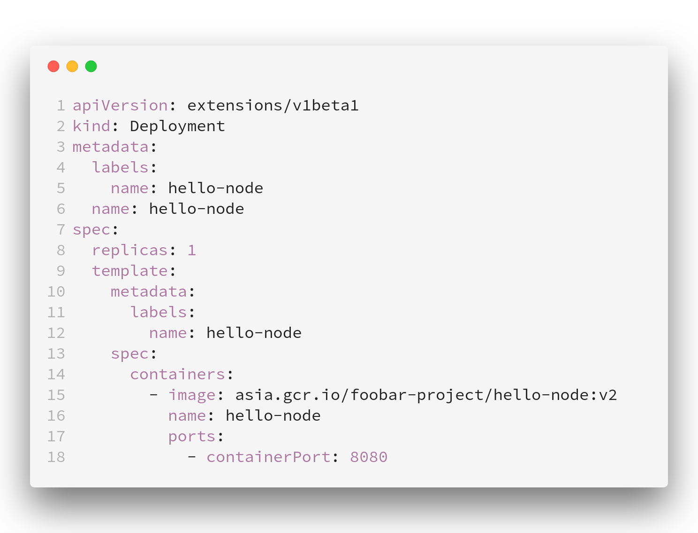
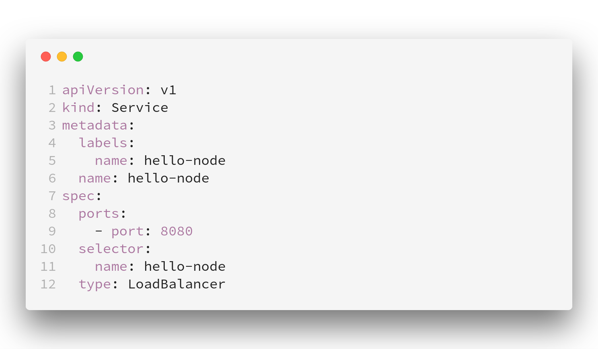
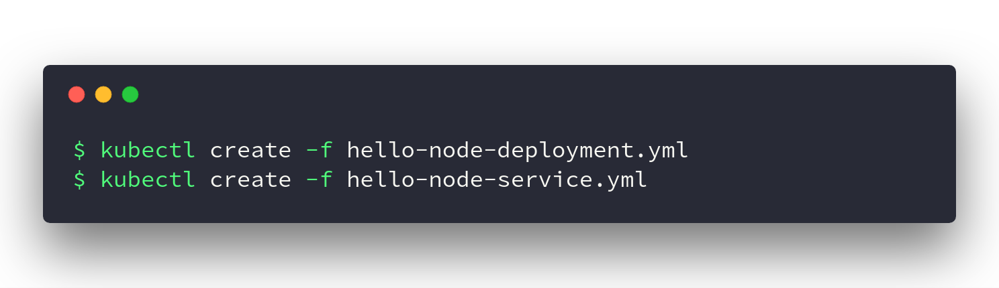
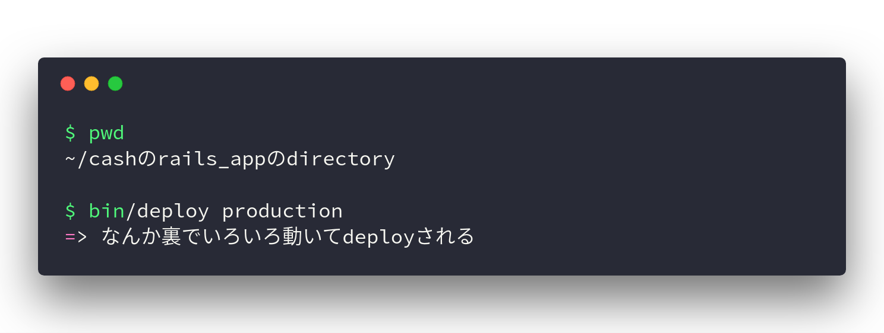
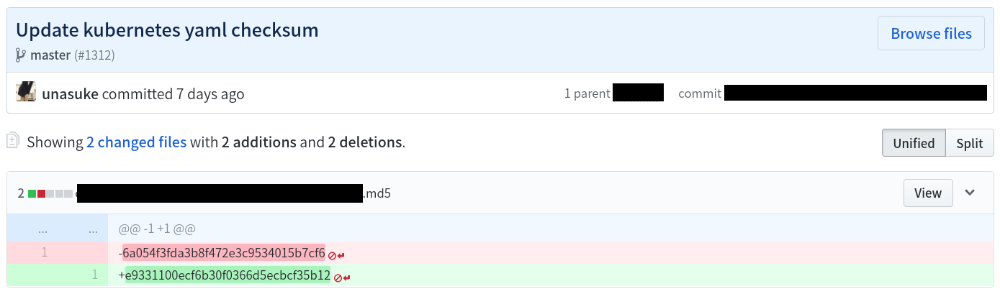
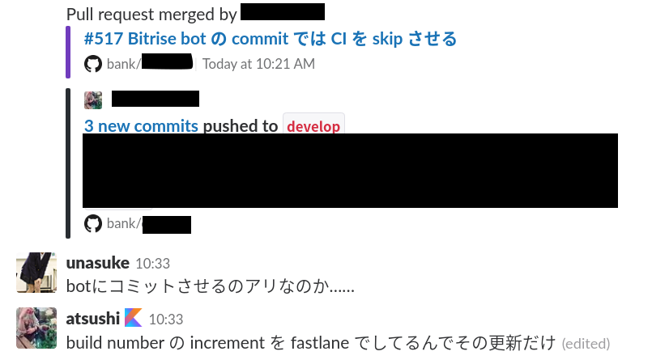
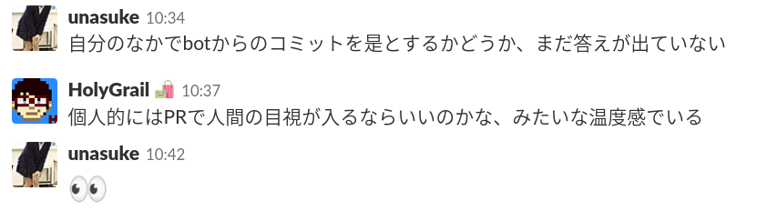

kubernetes deployment
～ホントにこれでええの～
2018-04-05
表参道.rb #33 ~Deploy~
うなすけ
自己紹介
- 名前: うなすけ
- 株式会社バンク
- エンジニア
- twitter : @yu_suke1994
- GitHub : @unasuke

CASH on Rails!
kubernetes deployment
今後k8sと書きます
まえおき
- 転職が2月頭です
- 転職してからGCPとk8sを触りはじめました
つまりどういうことか
「それ○○でできるよ？」
になる可能性大
本題に入ります
k8s deployment
k8s deployment
みなさんdeployしてますか？
- FTP, rsync
- Capistrano
- ecs-cli
- k8s
- etc
k8s deployment
世は大コンテナ時代

k8s deployment
世は大コンテナ時代
コンテナをdeployするにはどうすればいいのか？
Docker Swarm……
k8s deployment
de facto standard of container orchestration toolk8s deployment
hands on
k8s deployment
hands on
k8s deployment
hands on
これでなんかうごく
k8s deployment
さて弊社
k8s deployment
さて弊社
k8s deployment
さて弊社
$ bin/deploy production
謎のmd5値が更新される
k8s deployment
さて弊社
謎md5の理由
先輩「それがないとdeployできなくなるんだよ」
スーパー要約
k8s deployment
弊社でのk8s deployの裏側
- Yamlに変更がないとき
- kubectl set image
- Yamlに変更があるとき
- kubectl apply
Yamlのmd5を見て判断している
k8s deployment
弊社でのk8s deploy
何がつらい？
- md5の更新をgit commitする必要がある
- chat deployができない
- CI serviceがgit commitするとか正気か？
- いやワンチャン……？
- CI serviceがgit commitするとか正気か？
- chat deployができない
CI serviceがgit commitするとか正気か？
CI serviceがgit commit
今日、PullReqを眺めていると……
CI serviceがgit commit
意見
※ ここで会場の意見を聞く
k8s deployment
弊社でのk8s deploy
他にも
- deploy通知どうする
- Podが入れ替わったかの監視
k8s deployment
弊社でのk8s deploy
みなさんはどうですか？
※ スライドは続くので後で聞くk8s deployment
k8s deploy tool
Shopify/kubernetes-deploy
- よさそう
- UIがリッチ
- rubygemなのはちょっといただけない
https://github.com/Shopify/kubernetes-deploy
k8s deployment
新生 k8s deploy tool
https://github.com/GoogleCloudPlatform/skaffoldSkaffold is a command line tool that facilitates continuous development for Kubernetes applications.
最近登場したばかりでまだ触れていない